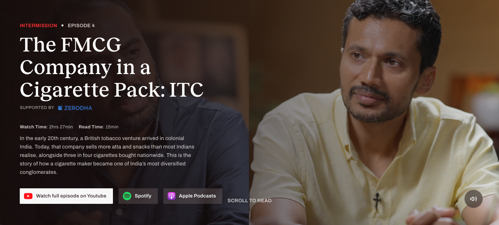
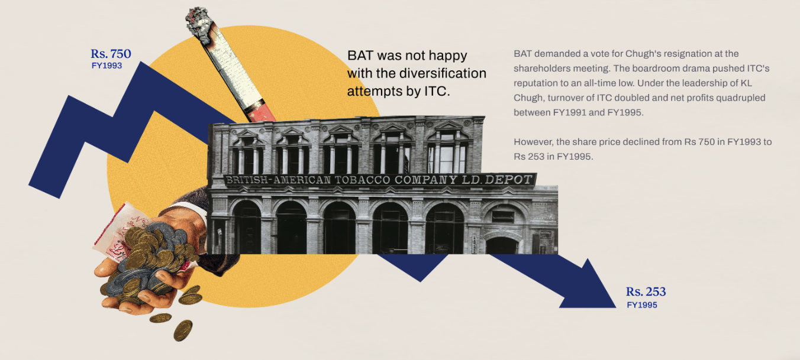
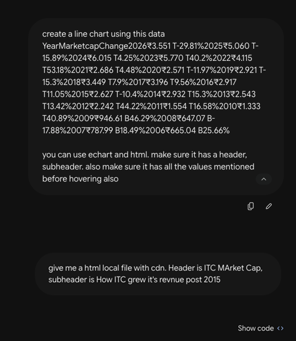
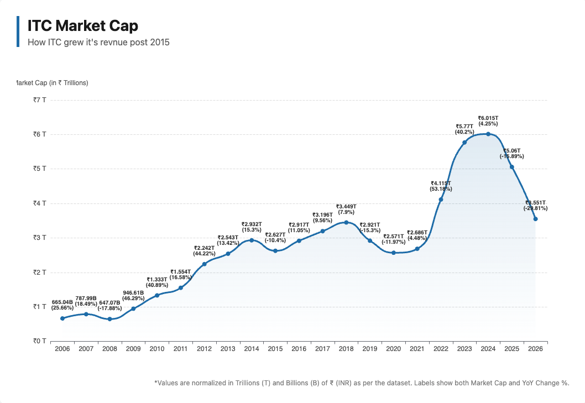
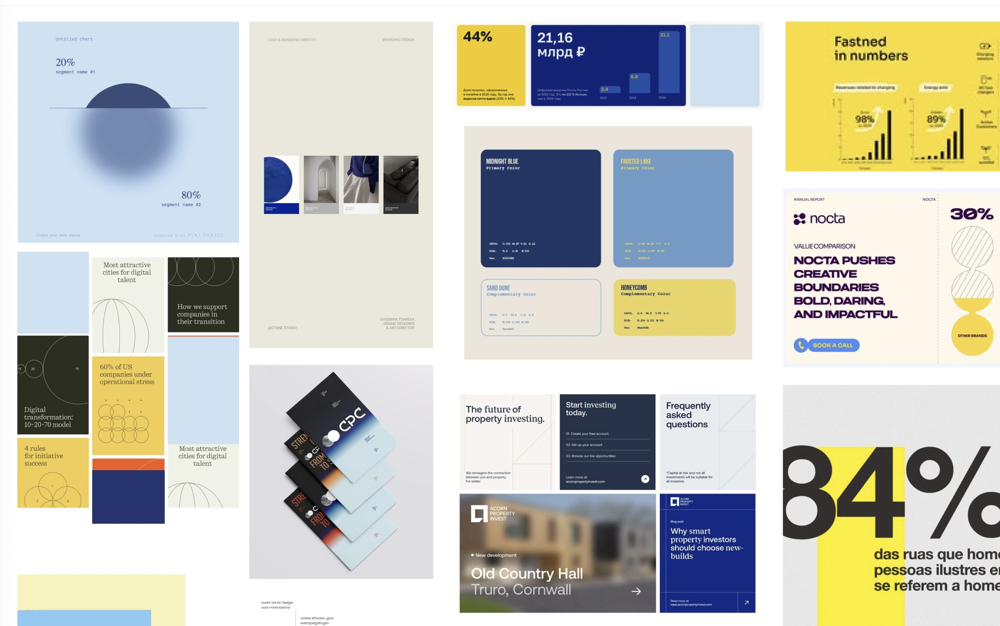
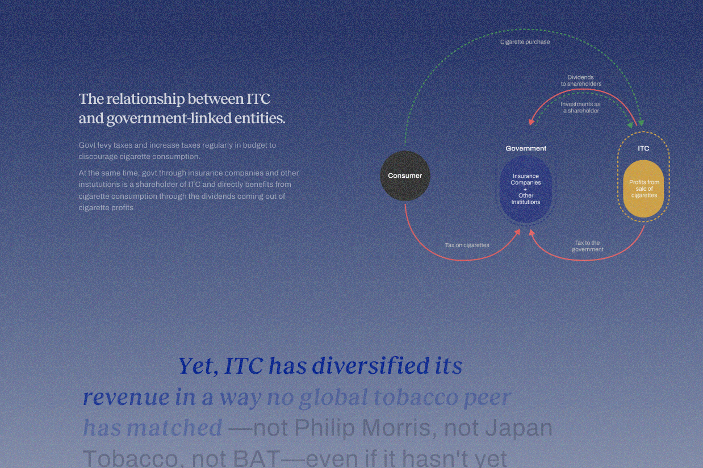
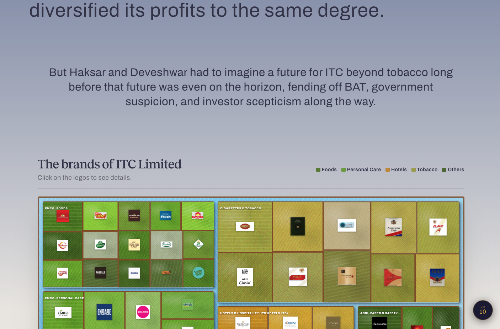
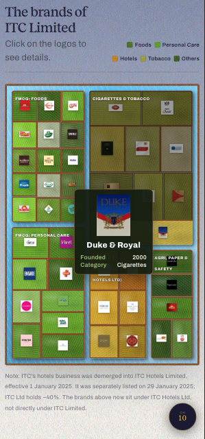
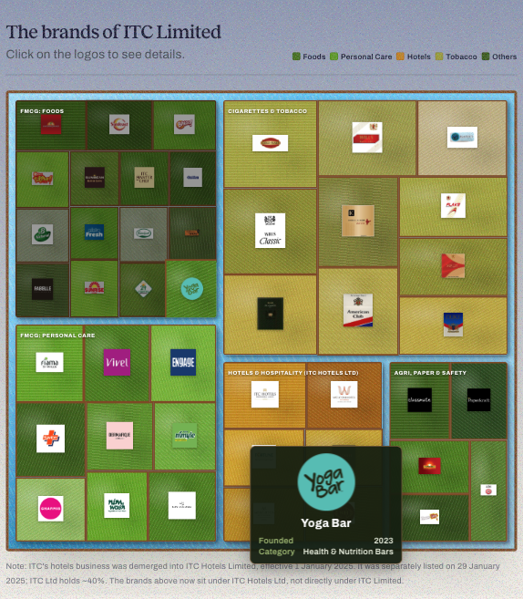
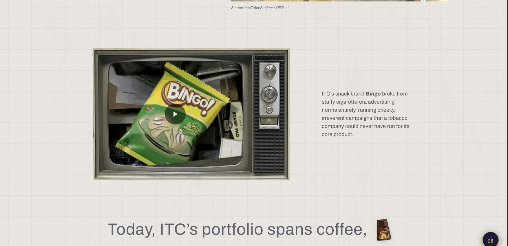

Intermission is a podcast series with dedicated companion websites, each episode tracing the history and legacy of a well-known Indian brand.
Episode 4 covers ITC, the Indian FMCG conglomerate — from its origins as Imperial Tobacco through its transformation into one of India's most diversified businesses.
This document walks through my process for conceiving, prototyping, and shipping the data visualisations for the episode's companion site.

Landing page of Intermission
SCRIPT
The process starts with the script.
Hosts Rohin and Seetha, working with researcher Raghav, produce the first draft — source material for what becomes a four-hour-long podcast episode. Editor Brady then condenses this into a tighter, ten-page abridged document.
Once the script is in hand, I sit down with the team to walk through the datasets we have and the points we want the visuals to emphasise. That conversation gives me an initial sense of direction, and from there I start ideating.
BAT was unhappy with this drift. It also wanted to raise its stake in ITC, so it accused ITC's management of financial irregularities in 1995. The fight became a political flashpoint, framed in the press as a foreign takeover attempt of an Indian icon. Chugh resigned that December, 20 months before the intended end of his tenure.
Deveshwar took the top job. But unlike Haksar, he inherited a company in a precarious situation.
V5.4 — Chart — ITC's share price decline from roughly Rs 750 in FY93 to Rs 253 in FY95, with annotations showing the BAT dispute

EXPLORATIONS
We were targeting people interested in the company and its story like business enthusiasts, entrepreneurs, historians, and finance academics.
My process for landing on the right visualisation is to try out a range of approaches rather than committing early. Some data points naturally suit a bar or line graph; others need a completely different treatment. I think the most important part of information design isn't the data itself, but how the information is revealed to the reader.
For this episode, the brief was to make dense business information relatable — through shapes and forms viewers instinctively recognise — while layering in enough narrative texture to keep it distinctly "ITC."
That framing led to some of the more interesting concepts we explored, including a cigarette-tax visual, a "logo farm," and a visualisation inspired by ITC's e-Choupal initiative.
I used Google Gemini to rapidly generate single-file HTML prototypes — self-contained explorations built with libraries like GSAP and eCharts.
Since each prototype is scoped to eCharts framework, the exploration itself is shaped by what its library contains. After several rounds of iterations of designs and discussion with my editor and researcher, we narrow down to a final set of visualisations and move into adapting them to the site's style guide.

Prompt

Result
The prompt on the left is a condensed version of the actual brief handed to Gemini — the relevant script excerpt, the data points to feature, and a short note on tone and reference. The result on the right is the raw single-file HTML it generates: functional immediately, but built entirely on Gemini's own visual judgement rather than the site's design system — which is exactly the gap the next stage closes.
DESIGN SYSTEM
The site's visual language is owned by our visual team.
The team consists of a product designer and an art director, who maintain a consistent five-colour palette and a full design system covering typography, sizing, and spacing.

Claude Code helps encapsulate all the single HTMLs created by Google Gemini into a single file with all the interactive artefacts.
After three episodes of Intermission, I've built up a prompt.md file that encodes this design system and our visual guidelines. It's evolved over time based on feedback on my visualisations and how well they fit the site's context, and it now contains a set of standardised variables I reuse across projects.
I use Claude Code, working on a local clone of the repository, to help set up the codebase architecture establishing clear, identifiable labels and global variables so changes stay consistent throughout.
This stage also involves breaking the single-file HTML prototypes apart into their component styles, scripts, and sections within the main index.html. I tag each prototype with identifiers like QW4K1-DataViz, which makes it much easier to reference specific pieces when I'm working with Claude on revisions.
Together, the prompt.md system and Claude Code meaningfully cut down the time it takes to turn a single-HTML prototype into a production-ready piece that fits the site's context and brand.



Q&A
This is also the first point in the workflow where the whole team sees everything together — images, illustrations, and data visualisations in situ — which surfaces a lot of feedback on alignment, colour, and even the underlying data.
QA is largely an iterative process grounded in the live context of the site.
Responsiveness is a major part of this stage. We test primarily across two device classes — iPhone and iPad — and portrait phone layouts almost always need a distinct design approach from desktop, which is why that testing happens earlier, at the single-HTML prototype stage.
iPad is less predictable. Depending on the visualisation, either the web or mobile version can end up working better — there's no fixed rule. The biggest challenge on iPad is usually font sizing and alignment; when maximum heights are set correctly, the web version tends to hold up better, though that's not a hard-and-fast rule either.

iPhone 12

iPad Mini
INTEGRATION

We used GitHub for version control, which kept our work transparent and kept us both accountable.
A solid communication and integration channel between designer and developer is essential to a project like this.
To keep the project modular and let us work in parallel without conflicts, we namespaced all my code under QW4K1- and worked on a separate branch. This let us avoid code collisions while still giving us the flexibility to draw on functionality the other had already built.
The completed data visualisations went live on The Ken's website on 17th August. You can explore the full episode here: Intermission/ITC


PROTOTYPES
The visualisations as they actually shipped, live and interactive below.